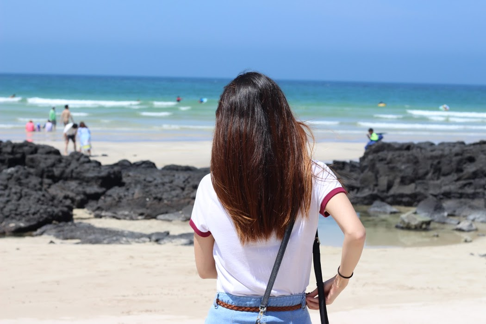

Jeju Island (제주도) The island lies in south of the South Korea. The island contains the natural world heritage site, Jeju Volcanic Island and Lava Tubes. There are many tourist attractions, such as attrative museums, restuarants, and beautiful environment.


Jeju island is surrounded by beautiful ocean. Therefore, the ocean view is the one of the beautiful scene in Jeju island.
There are so many cafe, restuarants around the beach, so that it was really beautiful to eat watching the ocean view.

Heukdwaeji (picture on the right) is one of my favorite foods in Jeju. It seems like normal pork belly, but this is actully called Jeju Black Pig.
It is a five-layered pork belly that is grilled in thick slabs over hardwood charcoal, along with complementary pork rind, for a flame-kisse, steak-like experience.
Jeju black port belly is more chewy, tender, and juicy than regular pork belly. So I always go to Jeju black pork Korean BBQ at least once whenever I visit Jeju Island.

This is also one of the popular food in Jeju, which is called Mul-Hew. It contains slices of seafoods and vegetables with a cold water and marinated souce. If you like seafood, I highly recommend try this.

Food is not only thing is Jeju island. There are many attractive museums in Jeju island such as Spirited Garden, Nexon Computer Museum, Museum of Sex, Chocolate Museum, Glass Museum, Teddy Bear Museum, and etc. One of my favorite museums is Teddy Bear Museum. This museum has various exhibitions; Some bears were in glass displays, others, life-sized ones, having a tea party. It does not have any attrative activity, but it was interesitng to see how they arrange the teddy bears.

These are foods from restuarnat called "Shin's Hanmo." Their foods are all made of tofu which was really interesting. Right side looks like meat, but it is actually made of tofu; but texture was as chewy as meat.

This one is combination of tofu, raw egg, vegetables, and rice. This resturant is really popular becuase all foods are made of tofu, meaning they have low calories while they are tasty.
Overall, Jeju was really beautiful, warm, and charming place. Foods were really good, and I really want to go back here just beacuase of thier foods. Also, Jeju island is a good place to visit during all four seasons. During spring, Jeju has lots of flowers. During summer, the ocean view is so beautiful. During fall, weather is perfect. Lastly, during winter, the white snow view in the moutain is charming.
© KellyPark 2019